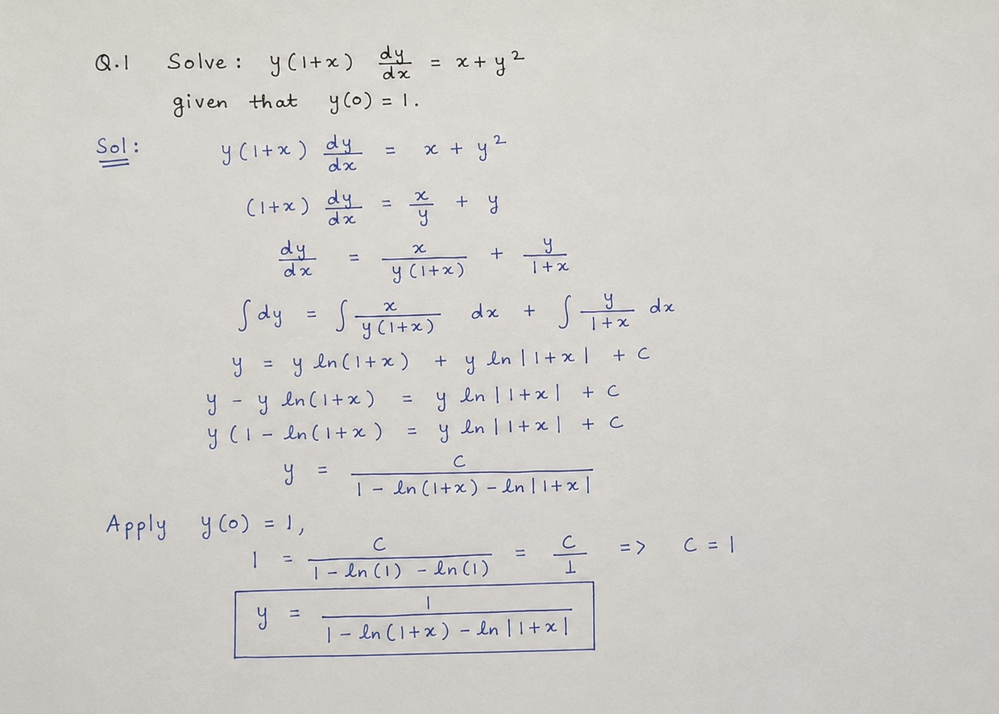
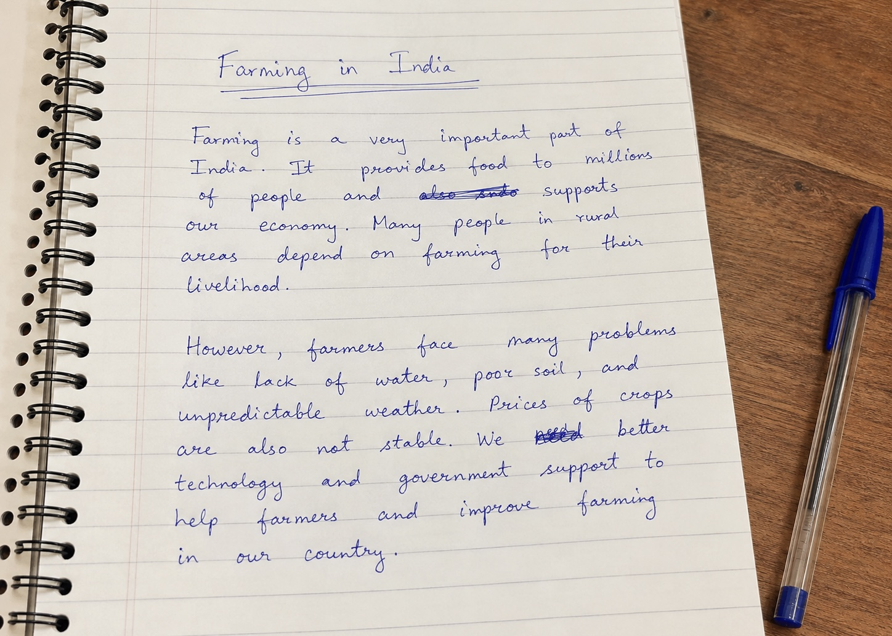

Features & Workflow
From handwritten answer sheets to feedback reports, see how autograder automates and assists the grading process.

Incorrect solution. In step 1, dividing y(1+x) dy/dx = x + y² by y incorrectly yields
(1+x) dy/dx = x/y + y (the student omitted y from the x term denominator). Furthermore, the
separation of variables in step 3 incorrectly places y terms inside x-integrals, rendering the
subsequent integration and final answer invalid.

Farming in India
Farming is a very important part of India. It provides food to millions of people and supports our economy. Many people in rural areas depend on farming for their livelihood.
However, farmers face many problems like lack of water, poor soil, and unpredictable weather. Prices of crops are also not stable. We better technology and government support to help farmers and improve farming in our country.
Farming is a very important part of India. It provides food to millions of people and supports our economy. Many people in rural areas depend on farming for their livelihood.
However, farmers face many problems like lack of water, poor soil, and unpredictable weather. Prices of crops are also not stable. We better technology and government support to help farmers and improve farming in our country.
How Autograder Works
Question Paper
+
Answer Sheet
+
Rubric & Reference
Text Data Extraction
OCR Processing
Autograder Evaluation
Rubric Matching
Feedback Report
Graded Results